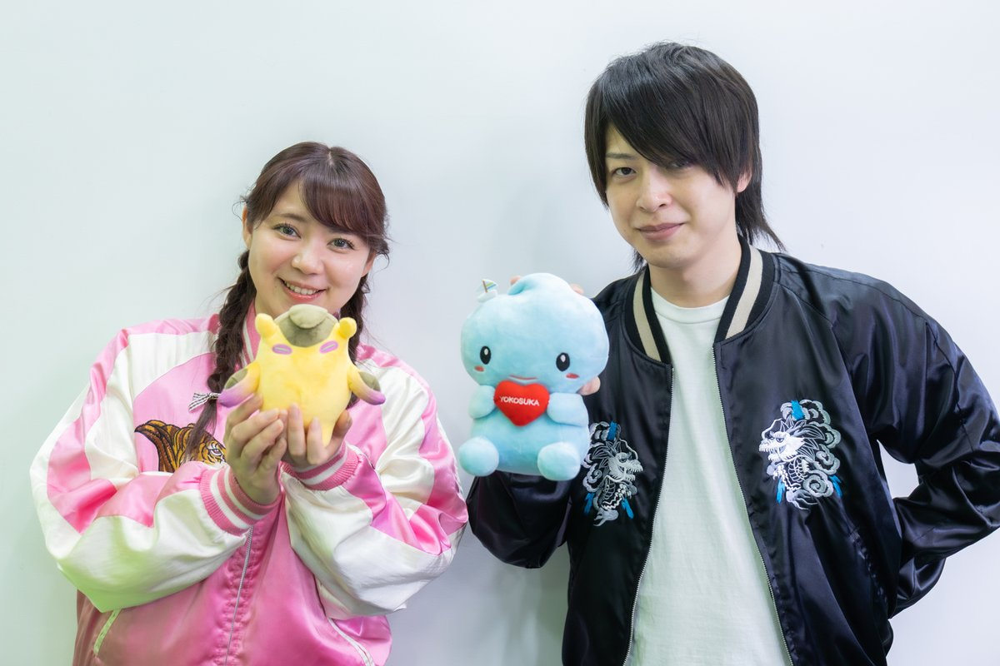
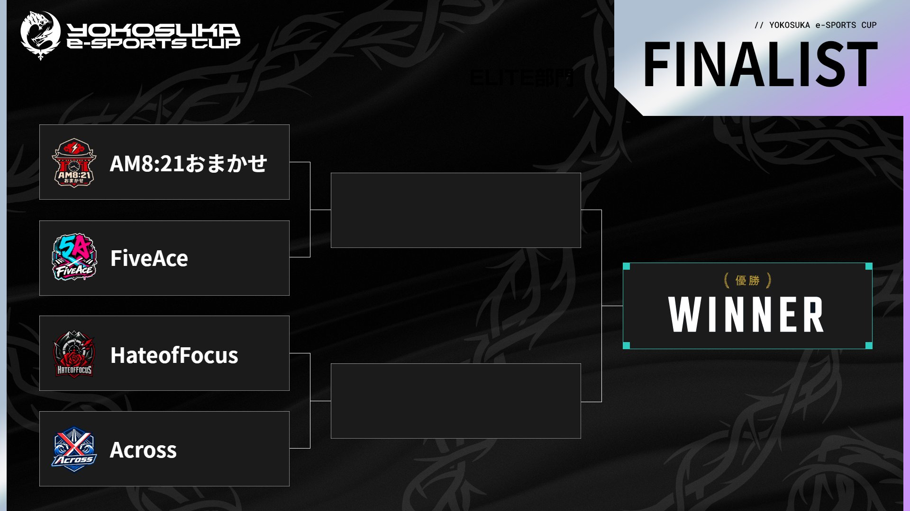

report
高校生68チームの頂点へ、残るは4チーム
——第7回 YOKOSUKA e-Sports CUP 予選レポート
7月20日、全国の高校生がVALORANTで競う「第7回 YOKOSUKA e-Sports CUP」の
ROOKIE部門決勝とELITE部門予選がオンラインで開催されました。
ELITE部門では68チームの中から、決勝に進む4チームが決定。
8月18日（火）、舞台は横須賀市「いちご よこすかポートマーケット」でのオフライン決勝へと移ります。

大会キービジュアル。
画像提供：大会運営様 ｜ 大会公式X：@yokosukaesports
横須賀市が主催する、高校生のための大会
YOKOSUKA e-Sports CUPは、横須賀市（横須賀集客促進・魅力発信実行委員会）が主催するeスポーツ大会です。
今年で7回目を迎え、運営は株式会社JCGが担当。出場できるのは国内在住の高校生で、1チーム5名。
昨年は過去最多の127チームが参加しました。
横須賀市は2019年から「Yokosuka e-Sports Project」として、市内の高校へのゲーミングPC無償貸与や
eスポーツ部の設立支援など、高校生とeスポーツをつなぐ取り組みを続けてきました。
本大会も後援に経済産業省、神奈川県教育委員会、横須賀市教育委員会が名を連ね、
40社を超える企業・団体が協賛。高校生の大会としては全国でも類を見ない規模です。
今年は新たに2部門制を導入しました。ランク制限を設け、始めたばかりの選手も出場しやすい「ROOKIE部門」と、
ランク制限なしで最強の高校生チームを決める「ELITE部門」です。
配信では上地克明市長による開会宣言も行われ、大会全体を市が後押しする姿勢が伝わってきました。
大会の規模
7回目
2019年開始の「Yokosuka e-Sports Project」から続く恒例大会
68チーム
ELITE部門予選に参加した高校生チームの数
40社超
大会を支える協賛企業・団体。後援には経済産業省も
ROOKIE部門決勝：エコ補完計画が初代王者に
当日の配信は昼過ぎにスタート。実況は谷藤博美さん、解説はyueさんが務め、
大会オリジナルのスカジャンに身を包んで横須賀らしい雰囲気で進行しました。
まず行われたのは、今年新設されたROOKIE部門の決勝戦。
7月12日の予選（52チーム）を勝ち上がった、宮城県の「エコ補完計画」と兵庫県の「ふわこにゃいにゃい」が対戦しました。
マップはアセント。前半を6-6で折り返す接戦となりましたが、終盤に抜け出したエコ補完計画が13-9で勝利し、
初代ROOKIE部門王者となりました。
同じ高校の部活のメンバーで出場したというエコ補完計画。
リーダーのマルプー選手は「チームメイトを信頼してたくさん練習した。来年もこのチームで参加したい」と語りました。

写真提供：大会運営様
ELITE部門のしくみ：負けたら終わりの一発勝負
ELITE部門の予選には68チームが参加し、A〜Dの4つのブロックに分かれて戦いました。 すべての試合がBO1（1試合勝負）のシングルエリミネーション。負けたらその場で敗退です。
- ブロック内トーナメント（7月20日・オンライン） 68チームがA〜Dの4ブロックに分かれ、1回戦から1試合勝負で勝ち上がりを決める
- ブロック決勝（同日） 各ブロックで勝ち残った2チームが対戦。勝者だけが決勝大会へ。ここで4チームに絞られる
- 決勝大会（8月18日・オフライン） ブロック優勝の4チームが、よこすかポートマーケットでのトーナメントで対戦。2試合勝てば高校生の頂点
マップは通常のコンペティティブモードと同じプールから、両チームが2つずつBAN（使用禁止）して決める方式。
撃ち合いの強さだけでなく、どのマップで戦うかの駆け引きも勝敗を左右します。
当日の配信では、Cブロックの1回戦1試合と、各ブロックの決勝4試合、あわせて5試合が中継されました。
ここからは配信の流れに沿って、予選の一日を追いかけます。
配信で追う、予選の一日
1回戦ピックアップ：エリート 13-9 オールフィジカルズ
配信最初の試合は、Cブロック1回戦から。地元・横須賀市のチーム「エリート」が「オールフィジカルズ」と対戦しました。 序盤の撃ち合いで主導権を握ったエリートが13-9で勝利し、地元代表として2回戦へ駒を進めています。
Aブロック決勝：AM8:21おまかせ 13-11 Gra AcademyMAP: ロータス
この日最大の波乱が起きた一戦です。Gra Academyは、昨年大会を制したチームの流れを汲み、
メンバー全員が最高ランク「レディアント」という優勝候補。対するAM8:21おまかせは、ランク差では格下とされる挑戦者でした。
試合はGra Academyが11-8とリードし、勝利まであと2ラウンドと迫ります。
しかしここからAM8:21おまかせが踏みとどまり、5ラウンドを連取。
13-11の大逆転で決勝行きの切符をつかみました。
ランクの差を連携で覆した、一発勝負らしい結末でした。
Bブロック決勝：FiveAceが勝利
Bブロックを制したのは、2年前の第5回大会を制覇し、昨年も決勝に進んだ実績を持つFiveAce。 注目選手のJAM選手を筆頭にフィジカルの強さを見せつけ、実況席からも「優勝候補」の声が上がる完成度で勝ち上がりました。
Cブロック決勝：HateofFocus対チキンノワールMAP: アセント
Cブロック決勝は、茨城県つくば市のHateofFocusと横浜市のチキンノワールの対戦。 HateofFocusが序盤から盤面を支配し、パーフェクトラウンド（味方を1人も失わないラウンド取得）も交えて押し切りました。 なお、事前に注目チームへ挙げられていた強豪・なめくじブラザーズの姿はブロック決勝にはなく、 一発勝負の厳しさをうかがわせます。
Dブロック決勝：Across 13-7 バンタン列車ESノーズMAP: スプリット
最後のDブロック決勝は、全国高校生大会「STAGE:0」VALORANT部門準優勝の実績を持つ ルネサンス高等学校のAcrossが登場。前半から着実にリードを重ね、 危なげない試合運びで13-7と勝ち切りました。解説のyueさんも守りの完成度を高く評価する内容でした。
決勝に進む4チーム
| Aブロック | AM8:21おまかせ 優勝候補Gra Academyを13-11で逆転 |
|---|---|
| Bブロック | FiveAce 第5回大会王者。2年ぶりの頂点を狙う |
| Cブロック | HateofFocus チキンノワールとの決勝を制す |
| Dブロック | Across 「STAGE:0」準優勝校。バンタン列車ESノーズに13-7 |

画像提供：大会運営様
VTuberのミラー配信でも高校生の熱戦を発信
e活は本大会に協賛しており、予選当日はe活所属VTuberのまぐまぐ、白峰凱志、葉月こよりの3名が
ミラー配信（同時視聴配信）を実施しました。
昼の開始から夕方まで、高校生たちの試合をVTuberの視点とともにお届けしました。
8月18日の決勝でもミラー配信を予定しています。
final
8月18日、決勝はよこすかポートマーケットで。
観覧は無料です。
決勝大会は8月18日（火）、横須賀市の商業施設「いちご よこすかポートマーケット」でオフライン開催されます。
観覧は無料・事前申込不要。実況は大会アンバサダーでゲームキャスターの岸大河さん、
解説はyukishiroさんとyueさんが務める予定です。
注目は、FiveAceとHateofFocusがともに、立川市のeスポーツチームAMORISに所属する選手
（JAM選手、K1ruA選手）を擁していること。勝ち上がれば「同門対決」が実現します。
優勝候補を破ったAM8:21おまかせの勢い、予選で圧巻の完成度を見せたAcrossの試合運びにも注目です。
三浦半島のグルメが集まる会場で、高校生の頂点を決める一日。
夏の思い出づくりに、ご家族で足を運んでみてはいかがでしょうか。
開催概要
| 大会名 | 第7回 YOKOSUKA e-Sports CUP |
|---|---|
| 主催 | 横須賀集客促進・魅力発信実行委員会（事務局：横須賀市観光課） |
| 運営 | 株式会社JCG |
| 後援 | 経済産業省／神奈川県教育委員会／横須賀市教育委員会 |
| 使用タイトル | VALORANT |
| 出場資格 | 国内在住の高校生（1チーム5名）。ROOKIE部門・ELITE部門の2部門制 |
| ELITE予選 | 2026年7月20日（月・祝）オンライン開催。68チーム・4ブロックのシングルエリミネーション |
| ELITE決勝 | 2026年8月18日（火）「いちご よこすかポートマーケット」（横須賀市新港町）にてオフライン開催。観覧無料・事前申込不要 |
| 配信 | YouTube・Twitchにてライブ配信。予選のアーカイブはこちら |
大会公式の発信
大会の最新情報・試合結果は、大会公式チャンネルで発信されています。 決勝当日は、e活所属VTuberのミラー配信でもお楽しみいただけます。
出典・画像について
- ・写真・キービジュアル・ブラケット画像は大会運営様よりご提供いただいたものです。
- ・試合内容は大会公式配信のアーカイブに基づいています。配信画面を使用する場合は「配信より引用」と明記します。
- ・横須賀市観光情報サイト「ここはヨコスカ」 e-Sports特設ページ
- ・横須賀市「Yokosuka e-Sports Project」